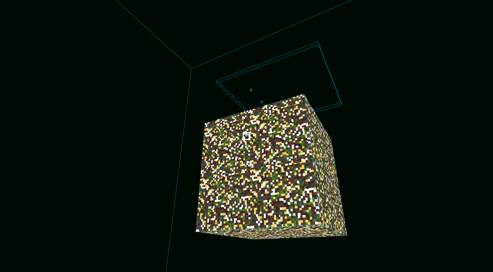
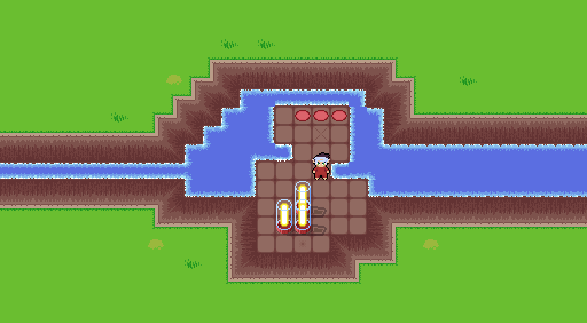

/home/bon/portfolio.html
/about.html
/blog-archive.html
My EPIC and COOL projects:
CeresVoxel:

A work in progress Survival Space Voxel Automation Game. I've replaced my modded Minecraft addiction with this so it better turn out well. Starting in Feburary of 2025 I began making a custom game engine with the sole intent of making a Minecraft-like automation game with strong survival elements. The game has taken inspiration from the games: Kerbal Space Program, Factorio, and Space Engineers, as well as the Minecraft modifications: Gregtech, Mekanism, Create, Valkyrien Skies, Clockwork, Railcraft, Traincraft, and more. This is my dream game, so I'm excited to rewrite and remake it a dozen times until I can release a game people enjoy! This has been my most ambitious personal project, but has been the most rewarding. It utilizes Vulkan for graphics, Jolt for physics, and is written in Zig.Sky Tree:

A rather silly game I made in 2 weeks for the Game Creation Club at The Ohio State University. It is a simple puzzle game inspired by the Flash game Bloxorz, The GameBoy Advanced Game The Legend Of Zelda: The Minish Cap, and Sokoban. I loved seeing my friends struggle to solve this game, hehehe. The game was made in the Godot game engine using GDscript. I was responsible for all the programming and art direction in the game. I had anticipated making this in a custom engine, until I realized I did NOT have time for that. A friend of mine produced all the music for the game and all the sound effects where freely available online under the public domain. I had a relatively cohesive vision for the game and my only regret is not spending some time optimizing it and not testing it on more machines/in browsers. Otherwise I am very satisfied with the final product given I had such a limited time frame!Voxel Lattice Render Demo:
An OpenGL graphics demo that renders voxels (textured cubes) relatively novely. This is still a rasterized approach to rendering voxels, but it is not greedy meshing or traditional. Instead of dividing each block into a single set of vertices; A large chunk of voxels is turned into a texture and then put onto one big face. Since the voxels are grid aligned you can use transparency within the texture and layers of faces to produce voxels. This of course has the draw back of terrible overdraw, but its kind of cool. One day I'll test whether this is a viable approach for an actual game. Maybe once I have a benchmarking suit in CeresVoxel I'll give it another shot.